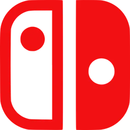
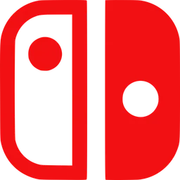

Sobre o jogo
Abaixo da cidade moribunda de Dirtmouth jaz um reino antigo e arruinado. Muitos são atraídos para o subterrâneo em busca de riquezas, glórias ou respostas para antigos segredos.
Hollow Knight é uma aventura de ação clássica em estilo 2D por um vasto mundo interligado. Explore cavernas serpenteantes, cidades antigas e ermos mortais; lute contra criaturas malignas e alie-se a insetos bizarros, e solucione mistérios antigos no centro do reino.
O mundo de Hollow Knight ganha vida em detalhes significativos, suas cavernas ficam cheia de vida com criaturas bizarras e terríveis, todas animadas manualmente em estilo 2D tradicional.
Cada nova área que você descobrir é lindamente exclusiva e peculiar, cheia de novos personagens e criaturas. Explore e descubra os segredos ocultos do caminho em ruínas. Se você gosta de jogos clássicos, personagens fofos mas assustadores, aventuras épicas e mundos lindos e góticos, Hollow Knight estará à sua espera!

 
